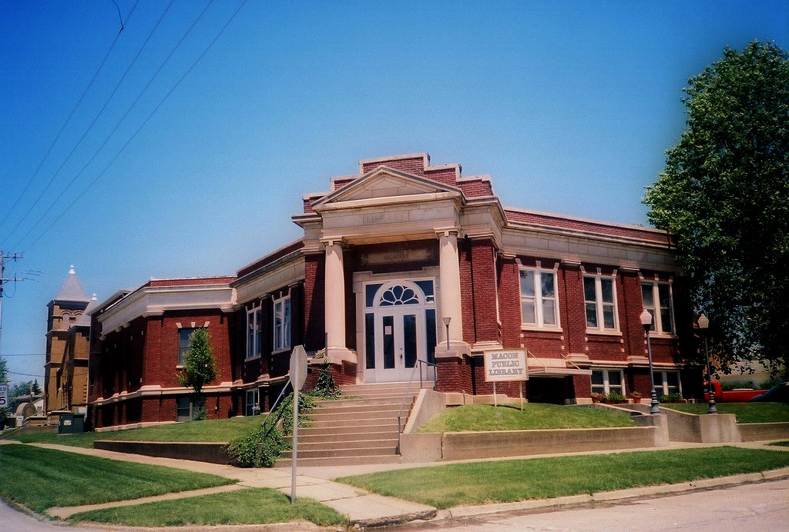

The reason why we move here is because my parent want to open up a donut shop and the one in Macon, Mo, is one those we can afford. When I first got to Macon, Mo, everything was so different. I was against my parent about moving there because Missouri doesn't have the sea. I love going to the sea, I went there every weekend in CA. Macon make me feel like I was at Cambodia. As times went on I started to get used to it and before I even realize it, I don't really care where I live anymore. Macon is a small city and there's about 5000 to 6000 people who live there. Compare that to Torrance, the different is night and days. When I lived in Macon I feel safer, I don't why I feel that way, I think it's because there's not alot of people who live there. Macon also have a lake called long branch. It's really nice, that's like the only thing that make that town a bit popular. I used to go there often because I love swimming. Some night when I get bored I called a couple of my friends and we would drive around that area. It's either that or go mess around in Walmart. Whenever I want to go to a big mall, or the movie theatre, I either have to drive to Columbia or Kansas City. I usually go to Columbia because it's alot closer than Kansas City. I really shouldn't talk too negative about Macon though, because I feel like part of my life is in that town.
